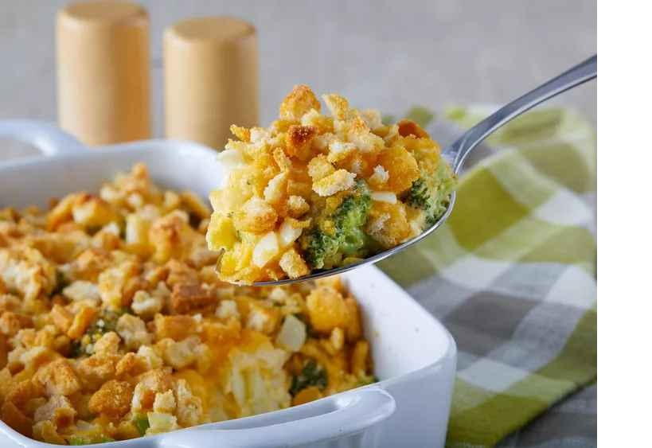

Broccoli Cauliflower Casserole
This broccoli and cauliflower casserole is always a hit! The croutons on top give it
that crunchy dimension that everyone will love.
Prep time: 15m
Cook Time: 45m
Servings: 6
Ingredients
- 2 cups broccoli
- 2 cups cauliflower
- 2 large eggs
- 1 cup shredded Cheddar cheese, divided
- ½ cup mayonnaise
- ½ cup chopped onion
- ½ cup butter, melted
- 1 (15 ounce) package seasoned croutons, crushed
Steps
- Preheat the oven to 350 degrees F (175 degrees C).
- Place broccoli and cauliflower in separate saucepans, cover with water, and
bring to a boil; cook until tender, 3 to 4 minutes. Drain and arrange in an
11x7-inch baking dish.
- Beat eggs in a bowl until creamy; stir in 1/2 cup Cheddar cheese,
mayonnaise,and onion and pour over vegetables. Pour melted butter on top
and sprinkle with remaining 1/2 cup Cheddar cheese. Scatter crushed
croutons evenly on top.
- Bake in the preheated oven until browned and bubbling, about 40 minutes.